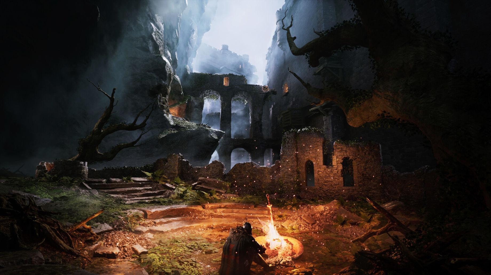

Dark Souls Remastered
Dark Souls redefiniu os RPGs de ação com seu combate estratégico, exploração interconectada e narrativa fragmentada. Cada área de Lordran esconde histórias, tragédias e segredos.
Explore o universo de Dark Souls Remastered em uma enciclopédia inspirada no estilo Fextralife. Descubra bosses, lore, builds, armas, NPCs e os mistérios ocultos de Lordran.

Dark Souls redefiniu os RPGs de ação com seu combate estratégico, exploração interconectada e narrativa fragmentada. Cada área de Lordran esconde histórias, tragédias e segredos.

O lendário Andarilho do Abismo.
Dificuldade Alta
Os implacáveis guardiões de Anor Londo, unindo velocidade letal e força devastadora em um dos confrontos mais marcantes de Dark Souls.
Muito Difícil
O verdadeiro Pai do Abismo.
Extremo (Easy para Vinícius)Descubra os melhores milagres, armas e talismãs para builds focadas em fé e suporte híbrido.
Entenda o surgimento da Era do Fogo, dos Lord Souls e do eterno ciclo entre luz e escuridão.
Explore locais brutais como New Londo Ruins, Tomb of the Giants e Lost Izalith.